Servicio de Proteccion
Federal
Escala Jerárquica
*** Recuerda Siempre mostrar Respeto a los mandos y tus Superiores Jerarquicos
Escala Basica
Escala Oficial
Escala Inspector
Escala Comisario
Mision
Misión Institucional
vision
Visión Institucional
Exhorto y lema
Exhorto
Lema
Presentación
*** Tienes que adoptar la posicio de en FIRMES y SALUDAR
- Buenos dias/tardes/noches
- Soy el [grado] [nombre] de proteccion federal
- Perteneciente a la region [región]
- Asignado al servicio [servicio]
- En el inmueble [inmueble]
- En el punto de seguridad [punto de seguridad]
- Con la misión de brindar la prestación de servicios de protección , custodia ,vigilancia y seguridad de bienes e inmuebles federales, y a persona físicas o morales , contribuyendo a que [misión del inmueble]
- Novedades del punto [novedades]
- [saludar]
- Ordene usted
Armamento
Medidas de seguridad
- Por seguridad y regla general, todas las armas de fuego se deben tratar como si estuvieran abastecidas y cargadas.
- No colocar el dedo sobre el disparador.
- Buscar un área libre y/o segura, y tomar el arma en guardia alta o baja, donde no se causen daños o se minimicen, evitando las balas perdidas.
- Verificar que el arma tenga puesto el seguro (si no es así, colocarlo).
- Retirar el cargador.
- Abrir y cerrar la recámara dos veces continuas, permitiendo que cierre libremente y, en caso de existir cartucho, este salga expulsado (el fusil Galil requiere quitar el seguro antes).
- Nuevamente abrir la recámara, con el fin de verificar visualmente y/o físicamente que no exista cartucho en el interior, cerrando la recámara permitiendo el libre desplazamiento del carro o corredera.
- Retirar el seguro.
- ***Accionar el disparador.
- Colocar el seguro.
“CON ESTAS MEDIDAS SE OBTIENE UN ARMA LIBRE Y SEGURA”
ANTIGUA MANERA
- Considerar las armas abastecidas y cargadas.
- No colocar el dedo sobre el disparador.
- Buscar un área libre y segura.
- Verificar que tenga el seguro puesto.
- Desinsertar el cargador.
- Cerrojear el arma dos veces.
- Verificar que no exista cartucho en la recámara.
- Retirar el seguro.
- ***Accionar el disparador.
- Colocar el seguro.
Mas Detalles ⚠️⚠️
AL TERMINAR LAS MEDIDAS DE SEGURIDAD CON TU ARMAMENTO…
◼SI MONTAS SERVICIO INSERTA TU CARGADOR Y COLOCA SEGURO
◼ SI DESMONTAS SERVICIO ENTREGA TU ARMA CON LA RECAMARA
ABIERTA Y EL CAÑON DIRIGIDO HACIA TU CUERPO
PELIGRO
NUNCA SUBIR CARTUCHO A LA RECAMARA SI NO ES NECESARIO
***Mediante oficio 3076/2022 de fecha 18 de julio de 2022, se instruye omitir accionar el disparador al momento de realizar las medidas de seguridad
Circulo de Fuego
Para que se provoque la acción del disparo es necesario que se
cierren
los 3 elementos constitutivos del círculo de fuego
ya que a la falta de uno de ellos no seria posible el citado
fenómeno.
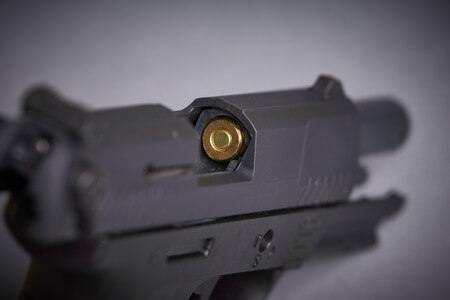
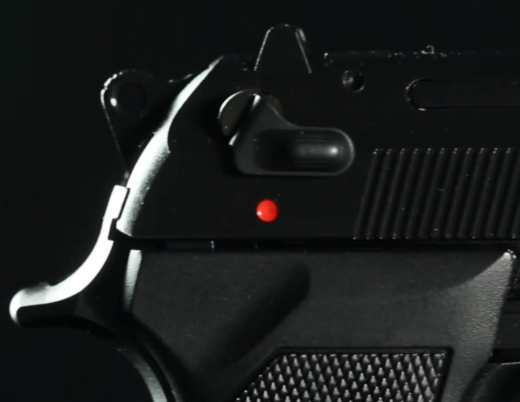
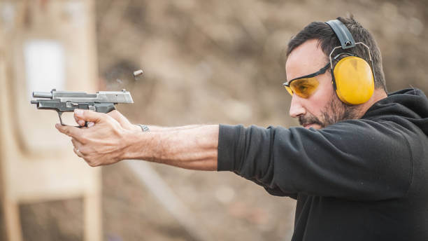
- Colocar un cartucho en la recamara.
- Retirar el seguro.
- Colocar el dedo en el disparador y accionarlo.
¿Que es el Circulo de Fuego?
Es el cierre de los 3 elementos constitutivos necesarios para generar un disparo
1. Para que exista cartucho en la recamara,
existen dos posibilidades.
● Que se coloque el cartucho en el interior de la recamara
para lo cual se requiere abrir la recamara manualmente.
● Que se coloque el cargador y se lleve hacia atrás el
carro- corredera o en su caso que se accione la palanca de
maniobras de igual forma hacia atrás.
2. Para que el arma se encuentre sin seguro, existe la siguiente posibilidad.
● Que se retire moviéndolo de la selección de seguro y manualmente se coloque en la función de fuego disparo.
3. Para que el dedo accione el disparador.
● Se debe a que el usuario introduzca el dedo en el área del
disparador (guardamonte).
● Que el mismo dedo aplique fuerza sobre el disparador hacia
atrás.
Caracteristicas de las armas
Selecciona una tarjeta
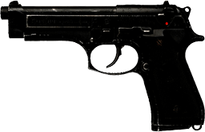
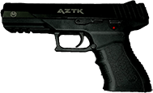
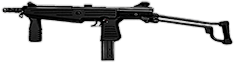
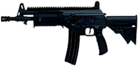
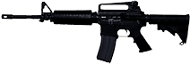
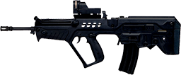
Beretta
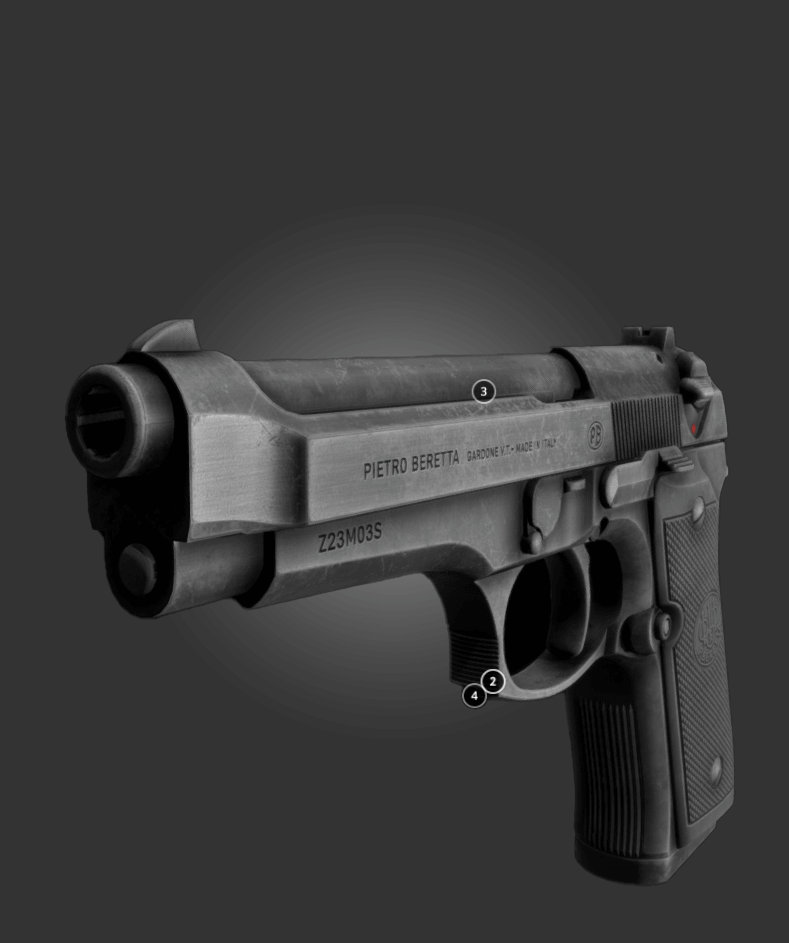
92FS
La Beretta 92 FS fue diseñada para ser y seguir siendo la pistola semiautomática más precisa, duradera y fiable del mercado. Fácil de usar, absolutamente segura y con una impresionante potencia de fuego, sigue siendo la mejor pistola militar, policial y táctica desde hace más de un cuarto de siglo.
- País de origen: 🇮🇹 Italia
- Tipo: Pistola semiautomática
- Munición: 9 mm Parabellum
- Peso: Aproximadamente 950 gramos
- Longitud: 217 mm
- Longitud del cañón: 125 mm
- Sistema de disparo: Doble acción
- Capacidad del cargador: 15 cartuchos
- Velocidad de salida: Aproximadamente 1,200 pies/segundo
- Seguro: Ambidiestro
☝️
🤓AZTK
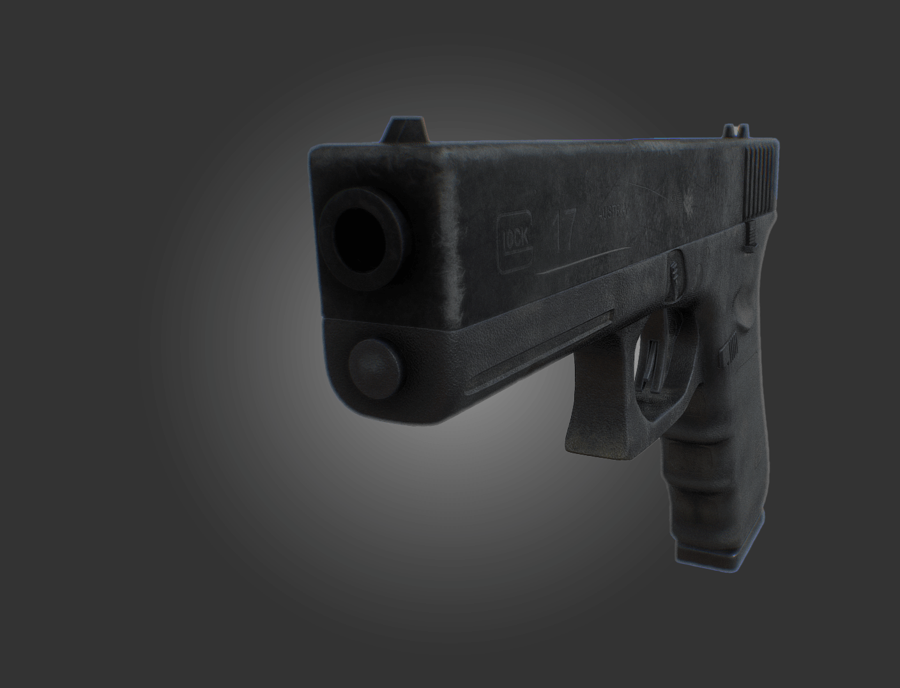
Mendoza AZTK
La AZTK 9mm es altamente valorada en entornos policiales y militares debido a su fiabilidad y capacidad de fuego. Su cargador de alta capacidad (18+1 cartuchos) la hace ideal para situaciones de confrontación donde se requiere un volumen de fuego sostenido. La resistencia de su construcción y los materiales de alta calidad aseguran un rendimiento consistente en diversas condiciones operativas, desde áreas urbanas hasta entornos rurales y desafiantes.
- País de origen: 🇲🇽 Mexico
- Calibre: 9 mm Parabellum
- Material de la corredera: Metálica con tratamiento Tenifer QPQ
- Material del armazón: Polímero de alta resistencia
- Peso sin cargador: 765 gramos
- Peso con cargador lleno: Aproximadamente 915 gramos
- Longitud total: 204 mm
- Longitud del cañón: 116,4 mm
- Capacidad del cargador: 18+1 cartuchos (18 en el cargador y 1 en la recámara)
- Tipo de mira: Fijas tipo "cola de milano" con líneas blancas y punto blanco en la mira frontal
- Sistema de seguro: Ambidiestro, con seguro manual y seguro anticaídas en el percutor
- Sistema de disparo: Recarga accionada por retroceso, mecanismo de disparo de doble acción
- Cañón: Fabricado con acero de alta calidad
- Riel para accesorios: Incluye un riel en la parte inferior del armazón para la colocación de accesorios como láser o linterna
☝️
🤓Mendoza
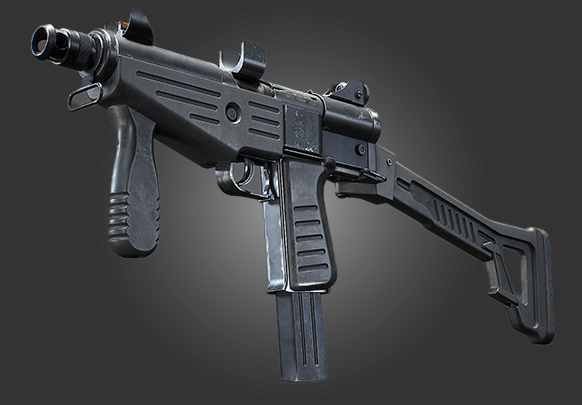
HM-3-S
La HM-3 es conocida por su diseño compacto y ligero, lo que la hace fácil de transportar y manejar. Su capacidad de fuego selectivo y semiautomático la hace adecuada para diversas aplicaciones, incluyendo uso policial, militar y defensa personal.
- País de origen: 🇲🇽 Mexico
- Tipo: Subfusil
- Munición: 9 mm Parabellum y .380 ACP
- Peso: 2370 g sin cargador (versión corta) y 2620 g sin cargador (versión larga)
- Longitud: 535 mm con culata extendida (versión corta) y 606 mm con culata extendida (versión larga)
- Longitud del cañón: 210 mm (versión corta) y 255 mm (versión larga)
- Sistema de disparo: Recarga accionada por retroceso, cerrojo cerrado
- Cadencia de tiro: 600 disparos por minuto en modo de ráfaga
- Capacidad del cargador: 20 o 32 cartuchos
- Seguro: Seguro de presión en la parte trasera de la empuñadura
☝️
🤓https://www.artstation.com/artwork/Al0PQX
Video demostrativo NomenclaturaGalil
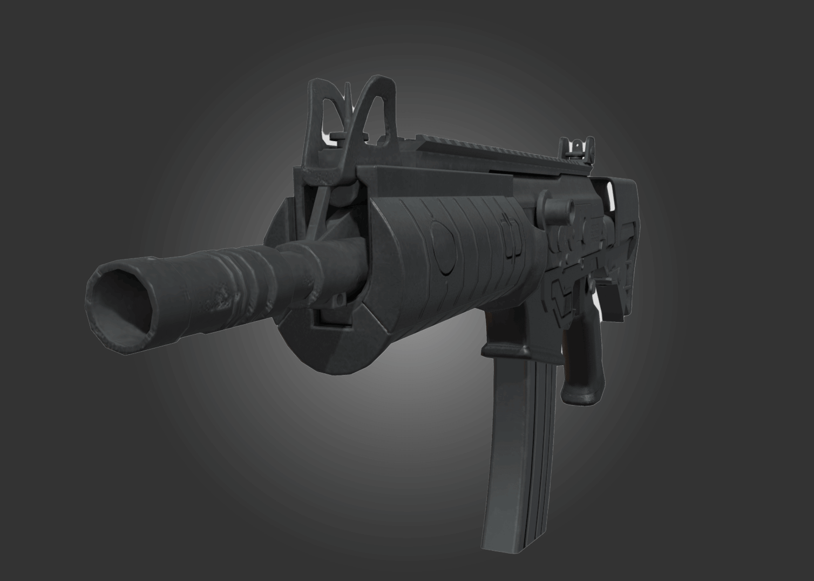
ACE 21
Las fuerzas policiales y las fuerzas armadas también utilizan el Galil ACE 21 por su fiabilidad y precisión. Su capacidad para disparar en modo automático y semiautomático proporciona flexibilidad en situaciones de alta tensión y enfrentamientos.
- País de origen: 🇮🇱 Israel
- Tipo: Fusil de asalto
- Munición: 5,56 x 45 mm OTAN
- Peso: Aproximadamente 3,05 kg
- Longitud del cañón: 216 mm (8,5 pulgadas)
- Longitud total: 730 mm
- Sistema de disparo: Recarga accionada por gas, cerrojo rotativo
- Cadencia de tiro: 680-880 disparos por minuto
- Alcance efectivo: 300-650 metros
- Capacidad del cargador: Cargador estándar OTAN de 30 balas
☝️
🤓bush master
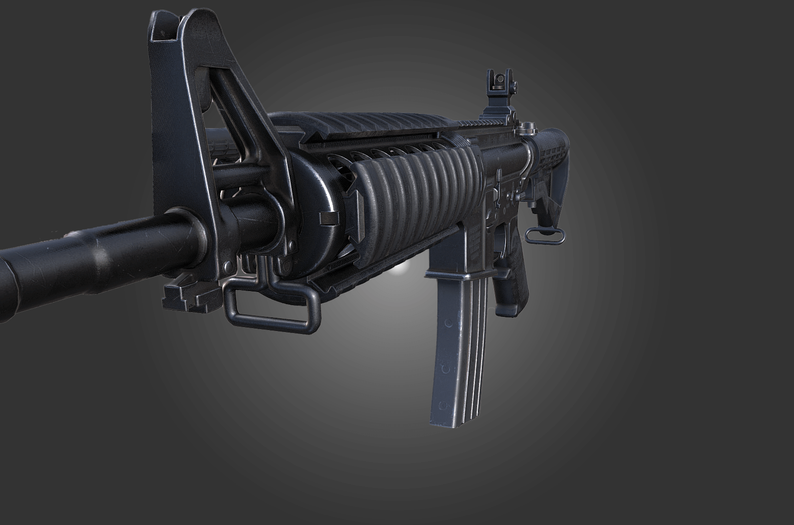
XM-15
El Bushmaster XM-15 es una serie de armas semiautomáticas versátiles que se utilizan en una variedad de contextos.Este fusil es empleado por fuerzas armadas y policiales debido a su fiabilidad y efectividad en combate. Su diseño robusto y sus características avanzadas lo hacen adecuado para operaciones tácticas y de seguridad en diferentes entornos.
- País de origen: 🇺🇸 Estados Unidos
- Tipo: Fusil tipo AR-15 / Carabina / Pistola semiautomática
- Munición: .223 Remington / 5,56 x 45 mm OTAN
- Peso: Aproximadamente 3,75 kg (con cañón de 510 mm y sin cargador)
- Longitud: 972 mm (con cañón de 510 mm)
- Longitud del cañón: 510 mm (fusil) / 410 mm (carabina)
- Sistema de disparo: Recarga accionada por gas, cerrojo rotativo
- Cadencia de tiro: 45 disparos por minuto
- Alcance efectivo: 550 metros
- Alcance máximo: 3,534 metros
- Capacidad del cargador: Cargador STANAG de 5, 10, 20 y 30 cartuchos
- Miras: Alza y punto de mira ajustables
- Riel: Picatinny (modelos de 2016)
☝️
🤓Tavor
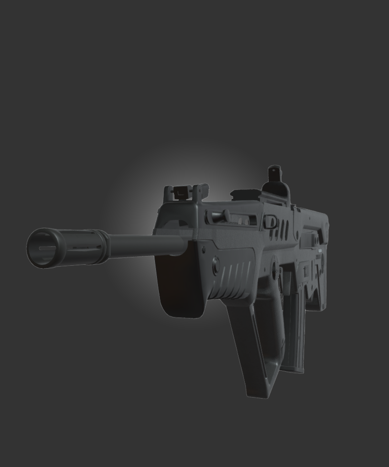
Tavor TAR21
El Tavor fue diseñado para mejorar las capacidades del soldado de infantería, especialmente en operaciones urbanas y combates en espacios cerrados. Es conocido por su fiabilidad en condiciones adversas y ha sido adoptado por varias fuerzas armadas en todo el mundo.
- País de origen: 🇮🇱 Israel
- Tipo: Fusil de asalto
- Munición: 5,56 x 45 mm OTAN
- Peso: 3,27 kg (TAR-21)
- Longitud: 725 mm
- Longitud del cañón: 460 mm
- Sistema de disparo: Recarga accionada por gas, cerrojo rotativo
- Cadencia de tiro: 750-900 disparos/minuto (dependiendo del modelo)
- Alcance efectivo: 550 metros
- Capacidad del cargador: 30 o 40 balas
- Velocidad máxima: 910 m/s (TAR-21)
☝️
🤓